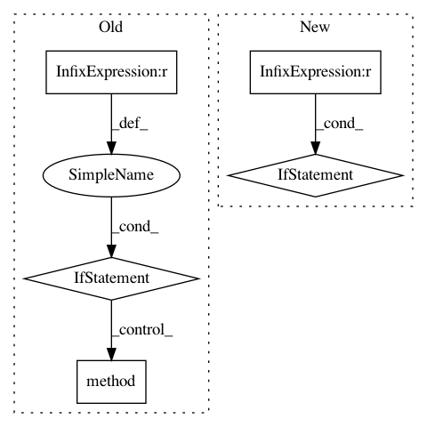

55cece34158493025b98ab8d75d5a85943d858b6,src/syft/core/node/common/action/run_class_method_action.py,RunClassMethodAction,execute_action,#RunClassMethodAction#Any#Any#,82
Before Change
result = method(resolved_self.data, *upcasted_args, **upcasted_kwargs)
// TODO: replace with proper tuple support
if type(result) is tuple:
// convert to list until we support tuples
result = list(result)
result = method(resolved_self.data, *upcasted_args, **upcasted_kwargs)
if lib.python.primitive_factory.isprimitive(value=result):
// Wrap in a SyPrimitive
result = lib.python.primitive_factory.PrimitiveFactory.generate_primitive(
value=result, id=self.id_at_location
After Change
result = method(*upcasted_args, **upcasted_kwargs)
else:
if resolved_self is None:
traceback_and_raise(
ValueError(f"Method {method} called, but self is None.")
)
// in opacus the step method in torch gets monkey patched on .attach
// this means we can"t use the original AST method reference and need to
// get it again from the actual object so for now lets allow the following
// two methods to be resolved at execution time
method_name = self.path.split(".")[-1]
if method_name in ["step", "zero_grad"]:
// TODO: Remove this Opacus workaround
try:
In pattern: SUPERPATTERN
Frequency: 3
Non-data size: 5
Instances
Project Name: OpenMined/PySyft
Commit Name: 55cece34158493025b98ab8d75d5a85943d858b6
Time: 2021-02-08
Author: tudorcebere@gmail.com
File Name: src/syft/core/node/common/action/run_class_method_action.py
Class Name: RunClassMethodAction
Method Name: execute_action
Project Name: mathics/Mathics
Commit Name: a74a4a6c1f2b574ab039fd0d3797eaa65697b03d
Time: 2016-08-23
Author: Bernhard.Liebl@gmx.org
File Name: mathics/builtin/manipulate.py
Class Name: Manipulate
Method Name: apply
Project Name: OpenMined/PySyft
Commit Name: 576fc10d67d35d4a6b37a5f42f6333ae8d4cd243
Time: 2021-02-11
Author: tudorcebere@gmail.com
File Name: src/syft/core/node/common/action/run_class_method_action.py
Class Name: RunClassMethodAction
Method Name: execute_action